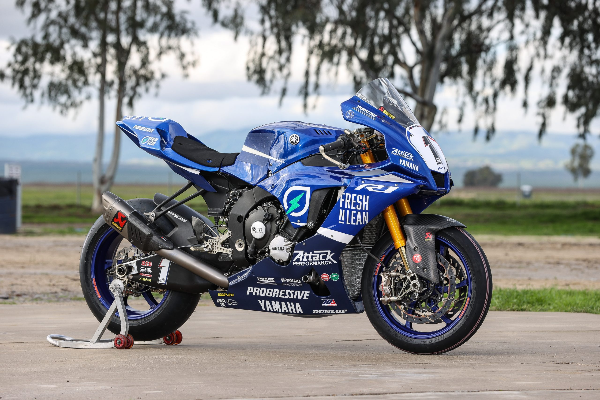
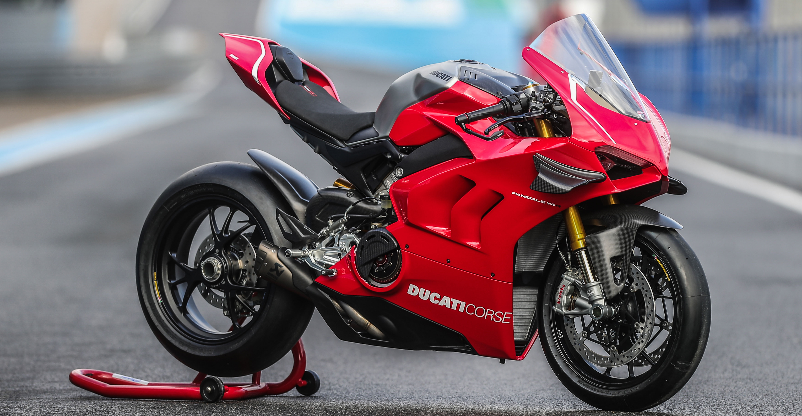
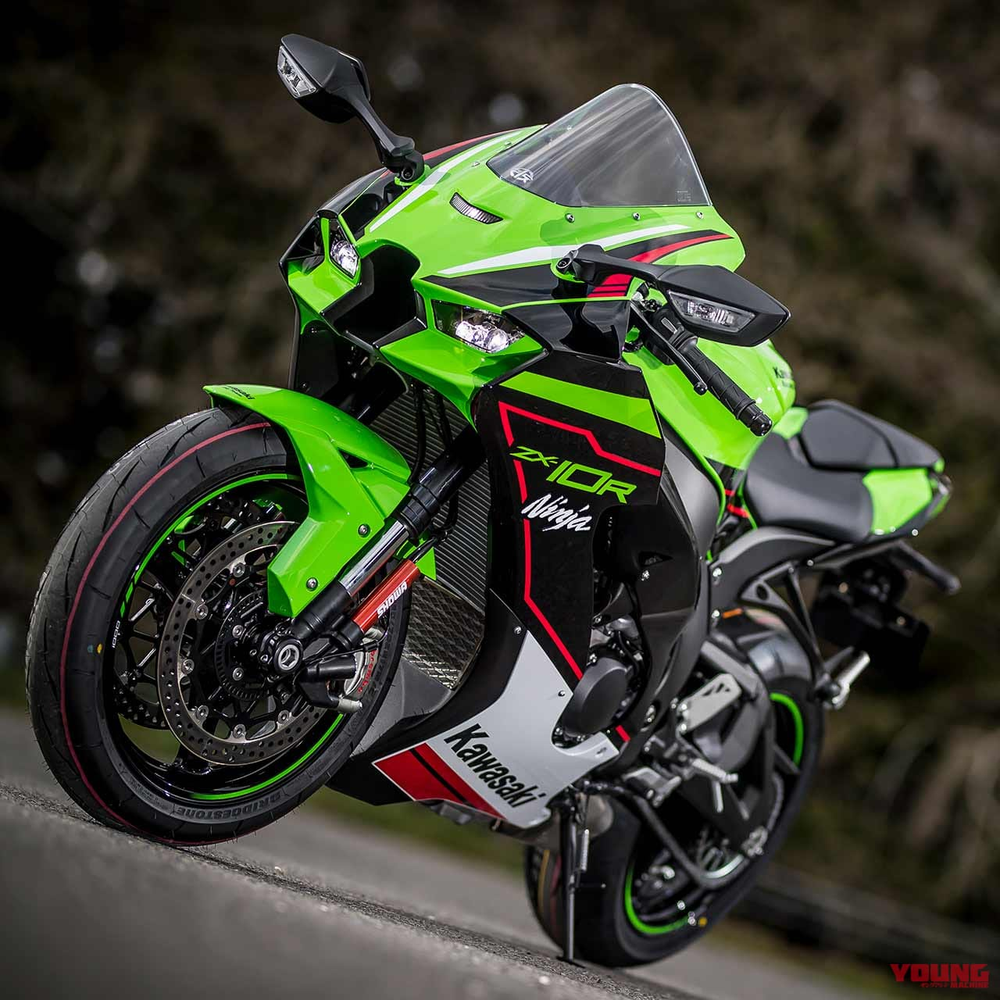
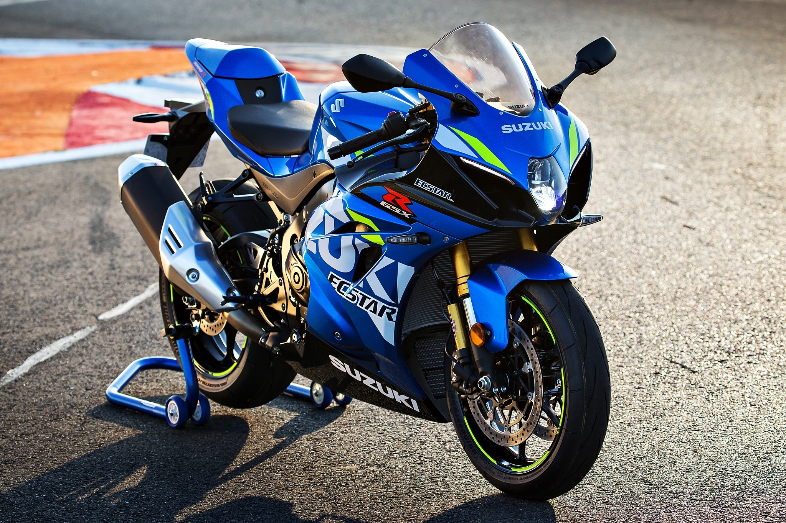

Analizamos a los cuatro gigantes del motociclismo: Yamaha, Ducati, Kawasaki y Suzuki. Descubre cuál es la marca que domina el asfalto.

La Precisión Japonesa
Conocida por su fiabilidad excepcional y manejo suave. La serie YZF-R y MT son iconos del motociclismo mundial gracias a su tecnología derivada de MotoGP (motor Crossplane).

La Pasión Italiana
Diseño premium, exclusividad y potencia bruta. Famosa por sus motores bicilíndricos (ahora V4) y su sistema de distribución desmodrómica único en el mundo.

El Poder Verde
Agresividad y rendimiento puro. Kawasaki se atreve a lo que otros no, como introducir sobrealimentadores (supercargadores) en sus motos de calle con la serie H2.

La Leyenda Accesible
Ofrece una increíble relación calidad-precio sin sacrificar rendimiento. La GSX-R es legendaria y la Hayabusa redefinió el concepto de hiperdeportiva para siempre.
Comparamos los modelos insignia de litro de cada marca para ver cómo se enfrentan en números crudos.
| Especificación | Yamaha R1 | Ducati Panigale V4 | Kawasaki ZX-10R | Suzuki GSX-R1000 |
|---|---|---|---|---|
| Motor | 998cc, 4 en línea (Crossplane) | 1,103cc, V4 a 90° | 998cc, 4 en línea | 999.8cc, 4 en línea |
| Potencia (HP) | ~ 200 hp | ~ 215.5 hp | ~ 203 hp | ~ 199 hp |
| Peso en marcha | 201 kg | 198.5 kg | 207 kg | 202 kg |
| Electrónica | Avanzada (IMU 6 ejes, Slide Control) | Premium (Evo 3, Suspensión Electrónica) | Avanzada (KCMF, Launch Control) | Competente (IMU, VVT Mecánico) |
| Precio Relativo | $$$ (Alto) | $$$$ (Muy Alto) | $$$ (Alto) | $$ (Mejor Valor) |
Prueba nuestro simulador rápido de preferencias.
Sube el volumen. Presiona los botones para escuchar el sonido real característico de cada motocicleta.
Audios reales grabados en pista. Requiere tener los archivos MP3 en tu carpeta local.